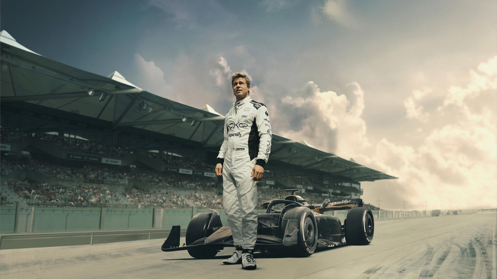
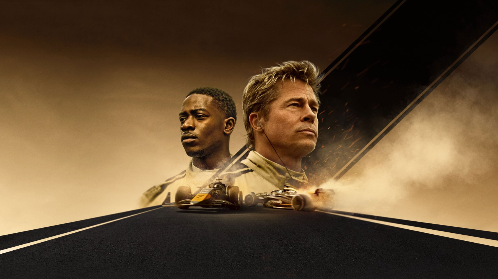

F1 con Brad Pitt: 7 curiosità sulle corse
Gran Premi veri, auto di Formula 2 travestite da monoposto, telecamere Apple e un garage finto in mezzo ai box delle scuderie vere
Quando in F1 - Il film le monoposto sfrecciano a pochi centimetri dal muro, la domanda viene spontanea: ma è tutto vero? In gran parte sì, ed è questo il motivo per cui il film di Joseph Kosinski si distingue da qualunque altro film sulle corse. Dal 25 giugno 2025 è nelle sale italiane con Warner Bros. e dietro quelle scene c'è un'operazione logistica quasi folle: un cast hollywoodiano in mezzo ai veri weekend di Gran Premio, auto costruite apposta e telecamere ripensate da zero. Ecco sette cose da sapere sulla lavorazione.
Hanno girato durante i veri Gran Premi
Niente circuiti ricostruiti in studio: la troupe si è presentata ai weekend di gara della Formula 1. Secondo il making of raccontato dall'Hollywood Reporter e da Time, le riprese hanno toccato 14 gare tra le stagioni 2023 e 2024, su tre continenti. Il primo ciak è partito a Silverstone nel luglio 2023, durante il Gran Premio di Gran Bretagna, e poi la produzione ha seguito il campionato tra Ungheria, Belgio, Monza, Olanda, Giappone, Messico, Las Vegas e Abu Dhabi. Le scene girate in pista sono state quindi incastrate tra una sessione ufficiale e l'altra, davanti al pubblico vero.
Una scuderia che non esiste, con il suo garage
L'APXGP, la squadra di Sonny Hayes, è inventata, ma nel paddock aveva tutto quello che serve a un team vero: un garage, un muretto box e una hospitality. The Race, tornato sul set di Silverstone nel 2024, racconta anche di una scena girata sulla griglia di partenza, con attori e due auto statiche portate via prima del giro di formazione. Gli attori, nel frattempo, si facevano intervistare nella zona mista come qualunque altro protagonista del weekend, con la troupe piazzata nello spazio riservato alle emittenti.

La monoposto è una Formula 2 mascherata
L'auto nera e oro del film non è una vera Formula 1. Il punto di partenza è un telaio Dallara di Formula 2 del 2018, allungato, allargato e dotato di un pacchetto aerodinamico da Formula 1 da Mercedes Applied Science e Carlin Motorsport; ne sono stati costruiti sei telai identici, più altri radiocomandati usati per le scene di incidente. Motor Sport Magazine, già dal set di Silverstone 2023, parlava di Formula 2 adattate dalla Mercedes per somigliare alle macchine moderne. Il trucco è stato poi completato in post-produzione: le auto del film sono state "rivestite" con i colori delle altre squadre, per mescolarle alle riprese della gara vera.
Quindici supporti per le telecamere
Per mettere lo spettatore nell'abitacolo, la produzione ha montato 15 punti di fissaggio per le camere sulle vetture, con la possibilità di usarne fino a quattro alla volta, come riportano sia Time sia l'Hollywood Reporter. Le camere sono state sviluppate da Apple, produttore del film, insieme a Sony e ridotte per pesare poco sulla macchina. Kosinski aveva già costruito il suo stile sul sistema di ripresa di Top Gun: Maverick: qui l'idea è la stessa, portata a terra e a trecento all'ora.

Brad Pitt ha guidato davvero
Pitt e Damson Idris non sono stati solo seduti in una scocca ferma. Prima delle riprese hanno provato auto di Formula 2 e Formula 3 al circuito Paul Ricard, in Francia, partendo da vetture più lente fino ad arrivare a quelle più potenti: NBC News parla di tre mesi di addestramento per Pitt, e Time di velocità fino a 180 miglia orarie, circa 290 chilometri orari. Per le scene più rischiose c'erano comunque stuntman professionisti, come ricorda Motor Sport Magazine, ma il produttore Jerry Bruckheimer ha detto di essere stato sollevato quando le riprese sono finite senza incidenti.
Lewis Hamilton è molto più di un nome nei titoli
Il sette volte campione del mondo è tra i produttori del film, attraverso la sua società Dawn Apollo Films, ed è stato consulente per la sceneggiatura, secondo Motor Sport Magazine. In pista ha fatto da coach agli attori durante le giornate di prove, e NBC News riporta il suo giudizio su Pitt: aveva già "un po' di feeling" con la guida. Anche il presidente della Formula 1, Stefano Domenicali, figura tra i produttori esecutivi, come scrive Time, un segnale di quanto la Formula 1 abbia voluto questo film.
Un paddock pieno di facce vere
A rendere credibile il circo ci sono i suoi protagonisti. Nel film compaiono piloti e team principal reali, tra cui Max Verstappen, Charles Leclerc, Christian Horner e Toto Wolff, mentre in telecronaca ci sono i commentatori di Sky Sports David Croft e Martin Brundle, come ricorda NBC News. Time racconta anche che Kosinski ha impiegato circa un anno per ottenere il permesso di girare nel simulatore riservato della Mercedes, vicino a Londra, con un livello di segretezza paragonabile a quello di Top Gun: Maverick.
I numeri: da film rischioso a record
Costruire tutto questo non è stato economico: Time e NBC News indicano un budget superiore ai 200 milioni di dollari, cifra riportata e non confermata dalla produzione. Dopo l'uscita ha però ripagato: nel luglio 2025 la CNBC l'ha dichiarato il film in sala di maggior incasso della storia di Apple e a ottobre 2026 risulta intorno ai 634 milioni di dollari nel mondo, il più alto per un film sulle corse automobilistiche. Nel marzo 2026, agli Oscar, sono arrivate quattro candidature, tra cui miglior film, e la statuetta per il suono.
Se questo tipo di cinema vi appassiona, leggete anche La rivincita della pellicola: perché i grandi registi tornano a VistaVision e IMAX, sul ritorno al grande formato, e Sinners di Ryan Coogler: 8 curiosità sul film. Per l'elenco dei premi del 2026 c'è Oscar 2026: tutti i vincitori, i record e le sorprese.
Le corse di F1 sembrano vere perché in gran parte lo sono: auto di Formula 2 travestite, telecamere inventate apposta e un garage finto dentro il paddock vero. Quale di queste curiosità vi ha sorpresi di più?
Domande frequenti
F1 con Brad Pitt è stato girato durante veri Gran Premi?
Sì: la produzione ha filmato durante 14 weekend di gara tra il 2023 e il 2024, partendo da Silverstone nel luglio 2023.
Che auto guidano Brad Pitt e Damson Idris in F1?
Monoposto di Formula 2 modificate con un pacchetto aerodinamico da Formula 1 da Mercedes Applied Science e Carlin Motorsport, non vere Formula 1.
Brad Pitt ha guidato davvero in F1?
Sì, dopo un addestramento su auto di Formula 3 e Formula 2 al Paul Ricard, con stuntman professionisti per le scene più pericolose.
Fonti consultate (9)
- Wikipedia – F1 (film)
- The Hollywood Reporter – How F1 The Movie Was Filmed at Real Grand Prix Races
- Time – How F1 Went Hollywood
- NBC News – Brad Pitt's new F1 The Movie brings immersive Formula 1 thrills to Hollywood
- The Race – What we learned being at the biggest F1 film set in a year
- Motor Sport Magazine – Brad Pitt filming F1 movie at the British GP
- CNBC – F1 is Apple's highest-grossing theatrical film ever
- Wikipedia – 98th Academy Awards
- MYmovies – F1 - Il film